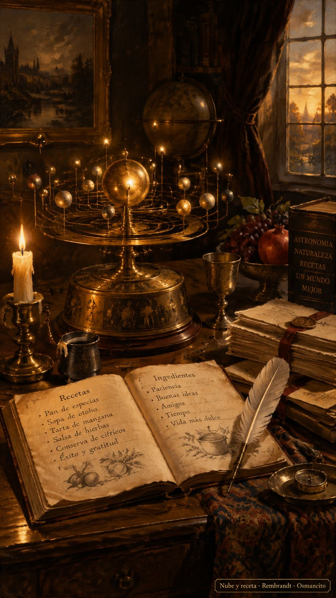

13 de octubre de 2026
Papeles, vectores, nube y receta

El día empezó con carpintería fina: el motor más terco de la casa no aceptaba los paquetes grandes, y hubo que encontrarle el compás a martillazos —paquetes medianos, respiración de dos minutos— hasta que caminó parejo. Una consultora externa revisó el guion de la casa y lo aprobó con nota alta. El ánimo, que amaneció apretado, fue soltando nudos con cada ajuste.
Después la casa aprendió una costumbre que vale oro: hablar con los papeles en la mano. Cada vez que una cifra sonaba a recuerdo, la asistente bajaba a contarla a los archivos, y los archivos ganaron todas las discusiones. Con esa vara quedó cerrada la obra escocesa por partida doble: sus dos traducciones completas, criticadas y en paz, y una columna nueva rematada con el último paquete de cien, justo el que faltaba.
El libro de arena amaneció con tres medidas y se acostó con cuatro. Llegó un medidor recién estrenado que hizo su corrida perfecta, quince llamadas sin un solo tropiezo, y al veterano que le debía cincuenta y una frases le bastó una llamada para ponerse al día. La bóveda quedó completa.
La tarde fue de planetario. Las frases del libro salieron a girar como una nube viva, cada planeta a su distancia del centro, y cuando la cercanía se volvió color, Osmancito declaró el éxito rotundo: no hay nada que moverle. Hubo prototipos que se probaron y se retiraron con la misma alegría —el círculo, la esfera— porque esta casa prueba, mide y poda sin duelo.
Y la noche trajo la prueba de fuego: repetir la receta desde cero, con las manos vacías, a ver si salía la misma torta. Salió una torta gemela con una diferencia fina: la nube se dibuja parecida, nunca idéntica, como cuando la misma gente se acomoda dos veces en la plaza —los amigos quedan juntos, la plaza nunca queda igual—. La receta aprendió a decir sus versiones en voz alta, como el horno que confiesa su temperatura.
De postre, el primer cuento del libro se rehizo en seis tramos textuales cosidos con puentes de la casa, y un verso de la hidra estrellada recibió su dibujo. La campanita nueva del taller sonó todo el día.
© 2026 Osmancito
Parte del día: motores amansados, una obra cerrada por partida doble, cuatro medidas completas y una nube que gira; la receta pasó su primera prueba. Lectura en curso: El Libro de Arena, de Borges. En la copa: una bebida de órbitas.